Manual
de operação
Relações institucionais, captação de recursos e comunicação do Centro Internacional de Computação e Tecnologias Quânticas do Estado da Paraíba.
Versão de novembro de 2026ciquanta@secties.pb.gov.br
Relações institucionais, captação de recursos e comunicação do Centro Internacional de Computação e Tecnologias Quânticas do Estado da Paraíba.
O CRM reúne num só lugar as organizações que podem investir em pesquisa com computação quântica, as conversas com elas, os mecanismos de financiamento e a agenda institucional do CIQUANTA. Ele trabalha sozinho boa parte do tempo: coleta dados todos os dias, cria contatos, acompanha respostas e pode iniciar abordagens.
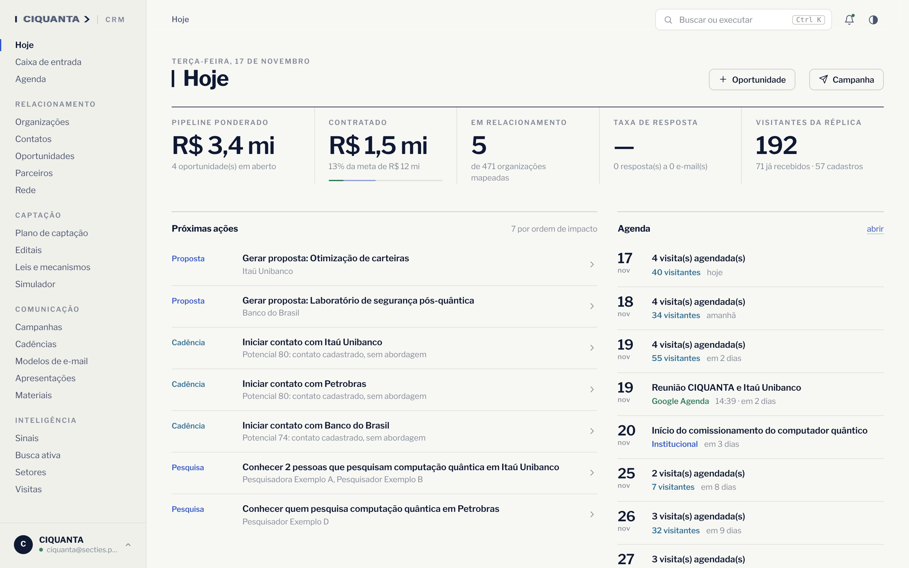
| Área | Para que serve |
|---|---|
| Hoje, Caixa de entrada, Agenda | O dia a dia: o que fazer agora, respostas recebidas e compromissos. |
| Relacionamento | Organizações (471 mapeadas), contatos, oportunidades de negócio, programa de parceiros e mapa da rede. |
| Captação | Metas, frentes de financiamento, editais, leis de incentivo e simulador. |
| Comunicação | Campanhas de e-mail, cadências automáticas, modelos, apresentações e materiais. |
| Inteligência | Notícias do mercado, pessoas de P&D das organizações, busca de empresas e contatos, setores e visitas à réplica. |
| Automação e Configurações | Links no rodapé do menu: rotinas automáticas, conexão de e-mail, remetente e cópias. |
Os dados do CRM ficam no navegador de cada computador e, com a base compartilhada ligada, num arquivo da pasta CIQUANTA CRM do Google Drive da conta ciquanta@. Assim todos os computadores trabalham sobre a mesma base. O site publicado guarda só o programa e as bases públicas (organizações, notícias, editais); nenhum contato ou conversa fica nele.
O CRM envia e lê e-mails, cria reuniões e guarda a base compartilhada por meio de uma ponte: um pequeno programa que roda dentro da própria conta ciquanta@secties.pb.gov.br, no Google Apps Script. Não é preciso Google Cloud, projeto, credencial nem ID de cliente. A configuração leva cerca de dez minutos e é feita uma única vez.
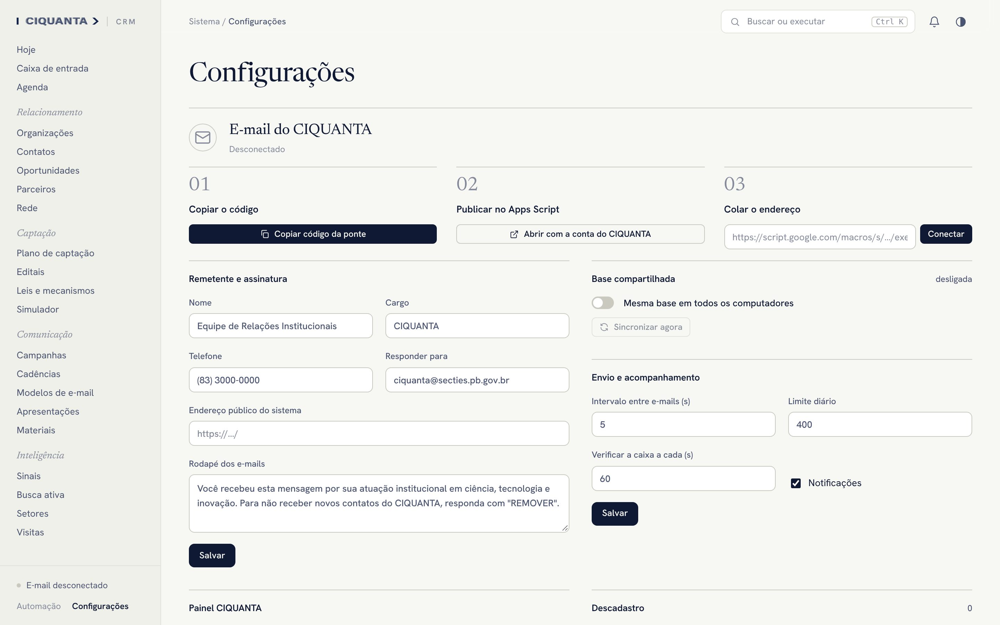
Em Configurações, clique em Copiar código da ponte. O código já vem com uma chave de acesso exclusiva, gerada neste computador.
Código.gs e cole o código copiado. Dê um nome ao projeto, por exemplo CIQUANTA CRM ponte./exec.Volte ao CRM, cole o endereço no campo do passo 03 e clique em Conectar. O cartão mostra o e-mail conectado, quantos envios ainda cabem no dia e se as reuniões terão Meet. A base compartilhada é ligada automaticamente.
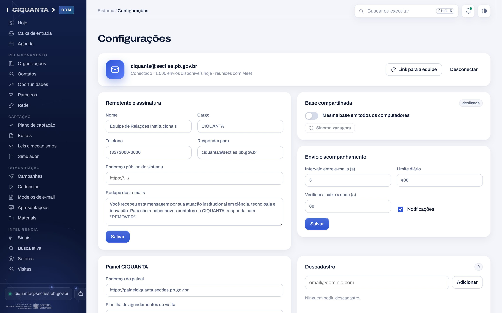
No computador já conectado, clique em Link para a equipe e envie o link por um canal interno. Quem abrir o link vê a tela Entrar.
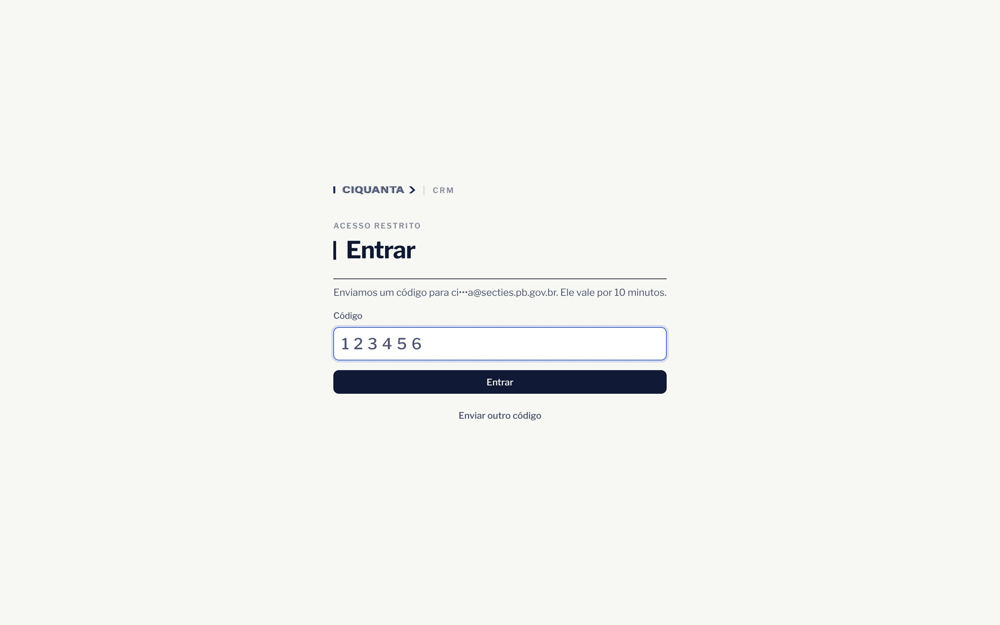
Em Configurações → Acesso ao CRM aparecem os computadores com acesso; Encerrar desliga um deles na hora. O link Sair, no rodapé do menu, encerra o acesso deste computador e pode apagar os dados dele, o que é recomendado em computadores compartilhados. Para que qualquer pessoa que abra o endereço caia na tela de entrada, publique o arquivo data/acesso.json (botão Baixar acesso.json).
Hoje é a tela de abertura. A frase do topo diz quantas ações pedem atenção, e logo abaixo aparecem o estado do e-mail, das respostas ao vivo e das cadências; abaixo vêm os indicadores (pipeline ponderado, contratado contra a meta, organizações em relacionamento, taxa de resposta e visitantes da réplica), as próximas ações ordenadas por impacto e a agenda unificada. Clique em qualquer indicador ou ação para ir direto ao ponto.
| Ação sugerida | O que fazer |
|---|---|
| Responder | Há mensagens recebidas sem leitura. Abra a caixa de entrada. |
| Proposta | Oportunidade em proposta ou negociação sem documento. Gere a proposta em PDF na ficha. |
| Atrasado / Retomar | Próximo passo vencido ou oportunidade parada há mais de 14 dias. |
| Edital | Chamada acompanhada com prazo em menos de três semanas. |
| Cadência | Organização de alto potencial com contato e sem abordagem. |
| Contato | Organização de alto potencial ainda sem e-mail cadastrado. |
| Pesquisa | Organização de alto potencial com pessoas publicando sobre computação quântica que ainda não estão nos contatos. Abra a aba Pessoas de P&D da ficha. |
Caixa de entrada mostra, quase em tempo real, as mensagens trocadas com organizações do CRM. Cada resposta encerra a cadência daquele contato, muda o relacionamento para “engajada” e fica no histórico. Quem responde de um domínio mapeado vira contato sozinho.
Agenda junta marcos do CIQUANTA, eventos do setor, prazos de editais, visitas à réplica e os compromissos do Google Agenda da conta. Em um evento, o botão Convidar público (eventos do CIQUANTA) ou Marcar encontros (eventos externos) cria uma campanha já com o público sugerido.
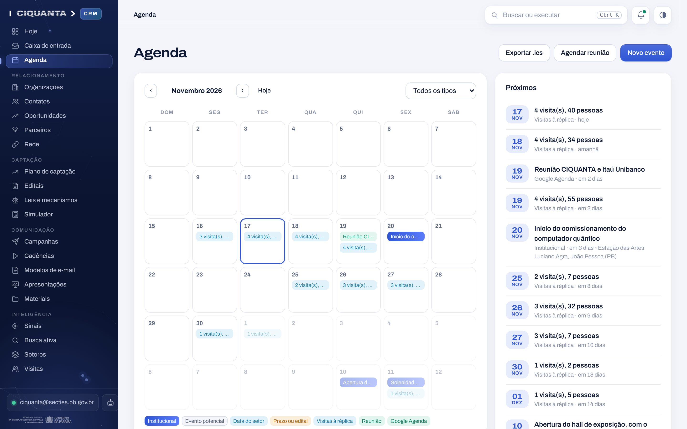
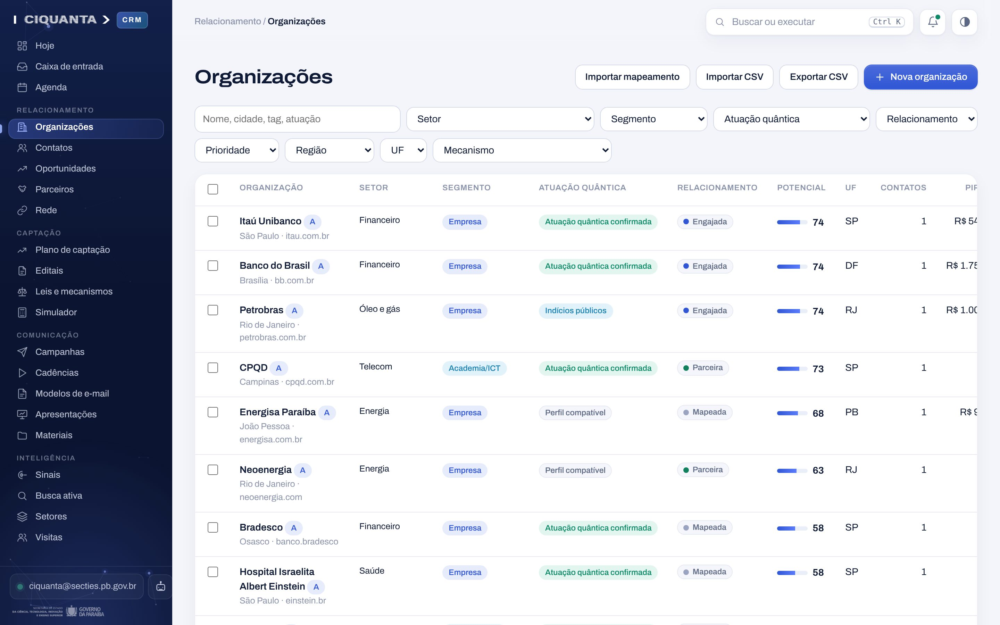
Potencial é uma nota de 0 a 100 com critérios visíveis (passe o mouse sobre a barra): atuação quântica, prioridade, obrigação de PD&I, setor estratégico, Nordeste, contato com e-mail, respostas, relacionamento, oportunidade aberta, notícias recentes e pesquisadores publicando sobre computação quântica.
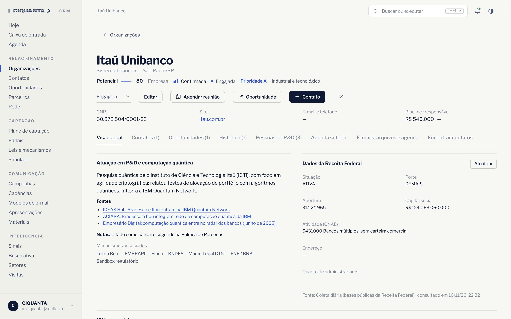
O funil tem cinco etapas, cada uma com probabilidade padrão (qualificação 10%, reunião 25%, proposta 45%, negociação 70%, contratada 100%). Arraste os cartões entre as colunas. O valor ponderado (valor × probabilidade) alimenta o plano de captação e a previsão por trimestre.
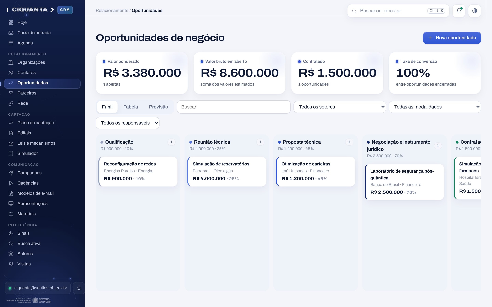
O programa transforma relacionamento em contribuição anual previsível. Cada cota tem valor, número de vagas e contrapartidas, como horas de processador quântico, laboratório conjunto e capacitação.
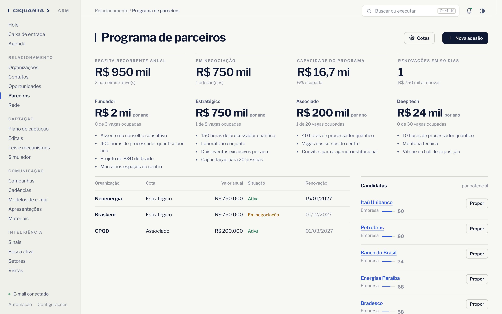
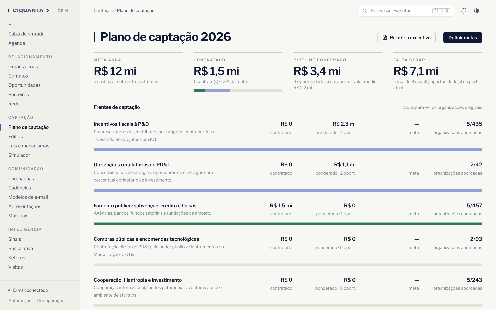
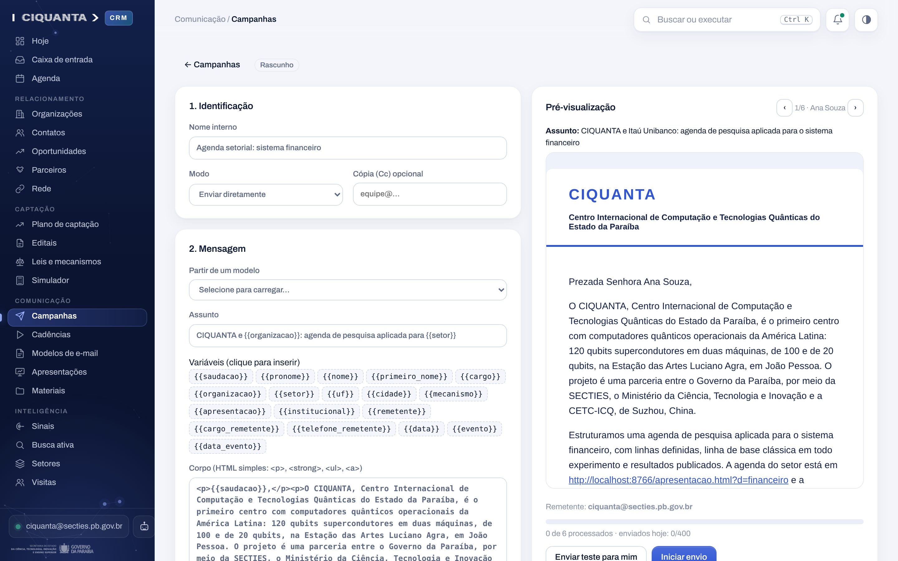
{{saudacao}}, {{organizacao}} e {{setor}} são preenchidas para cada contato, com o tratamento formal correto (Vossa Excelência, Vossa Magnificência, Vossa Senhoria).Na Agenda, abra um evento e use Convidar público ou Marcar encontros. O CRM escolhe o modelo e sugere o público: para eventos do CIQUANTA, autoridades, fomentadores, parceiros e organizações de maior potencial; para feiras e congressos externos, as organizações dos setores do evento (por exemplo, Febraban Tech para o sistema financeiro).
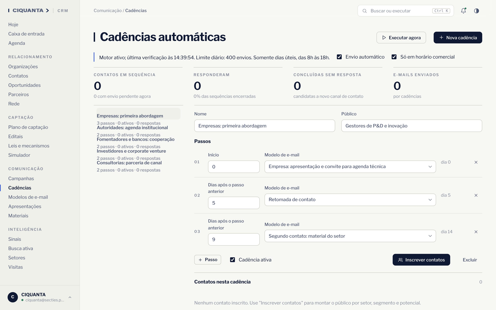
Uma cadência é uma sequência de mensagens (por exemplo, apresentação, retomada em cinco dias e material do setor em quatorze). As mensagens seguintes saem na mesma conversa do primeiro e-mail. A sequência para sozinha quando o contato responde ou pede descadastro. As cadências só enviam com algum computador da equipe aberto no CRM e conectado; com a base compartilhada, um único computador conduz os envios.
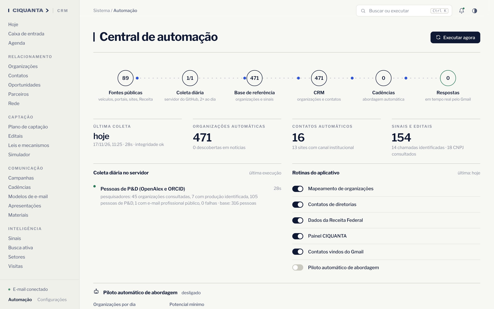
Todos os dias às 6h17, e às 15h47 nos dias úteis, o GitHub executa a coleta e publica as bases atualizadas:
| Etapa | Resultado |
|---|---|
| Painel CIQUANTA | Cadastros, visitantes previstos e recebidos, por estado. |
| Notícias e editais | Notícias sobre computação quântica, P&D e fomento, ligadas às organizações citadas, e chamadas abertas. |
| Contatos de diretorias | Lê as páginas de diretoria, governança, estrutura, contato e imprensa dos sites oficiais e guarda os e-mails de presidência, gabinete, reitoria, diretorias, relações institucionais, inovação, investidores, imprensa e contato. |
| Receita Federal | Situação cadastral, atividade, porte, capital e e-mail do cadastro. |
| Pessoas de P&D | Na OpenAlex, quem publica pela organização nos últimos seis anos, com temas e trabalhos; no ORCID, o cargo atual e o e-mail profissional, só quando o próprio pesquisador o tornou público e o domínio é o da organização. |
| Descoberta com IA | Com a chave da Anthropic, o Claude lê as notícias e sugere novas organizações e oportunidades. |
| Diretorias na web com IA | O Claude busca na web os e-mails de diretorias publicados fora da página inicial. Cada e-mail só entra depois que o CRM abre a página indicada e confirma que ele está escrito lá, no domínio da organização. Também traz as lideranças de P&D e inovação citadas pelo nome (só nome, cargo e fonte). |
Ao abrir o CRM e a cada três horas, as rotinas levam ao CRM as organizações novas, os contatos de diretorias, os dados da Receita e os totais do Painel CIQUANTA. Cada rotina pode ser ligada ou desligada na Central de automação.
Desligado por padrão. Ligado, ele escolhe todos os dias as organizações de maior potencial que têm e-mail e nunca foram abordadas e as inscreve na cadência do seu segmento (empresas, autoridades, fomentadores, investidores ou consultorias). Antes de ligar, preencha o remetente, revise os modelos e ajuste o limite diário e o potencial mínimo; a lista “Próximas organizações” mostra quem seria abordado.
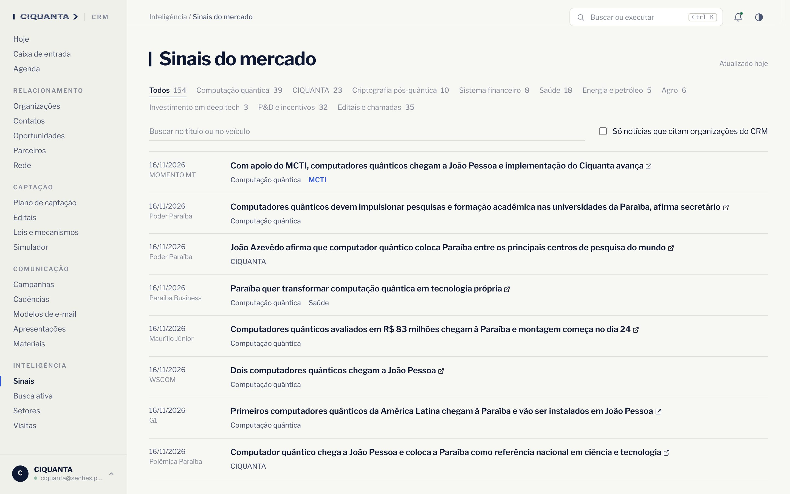
Em Busca ativa → Pessoas de P&D estão os pesquisadores e as lideranças de inovação de todas as organizações, para ir além dos e-mails institucionais. Filtre por computação quântica, por setor ou por quem tem e-mail profissional público; abra o perfil (ORCID ou OpenAlex), procure a pessoa no LinkedIn ou leve-a aos contatos com Adicionar. O botão Adicionar os que têm e-mail leva de uma vez as pessoas filtradas com e-mail público.
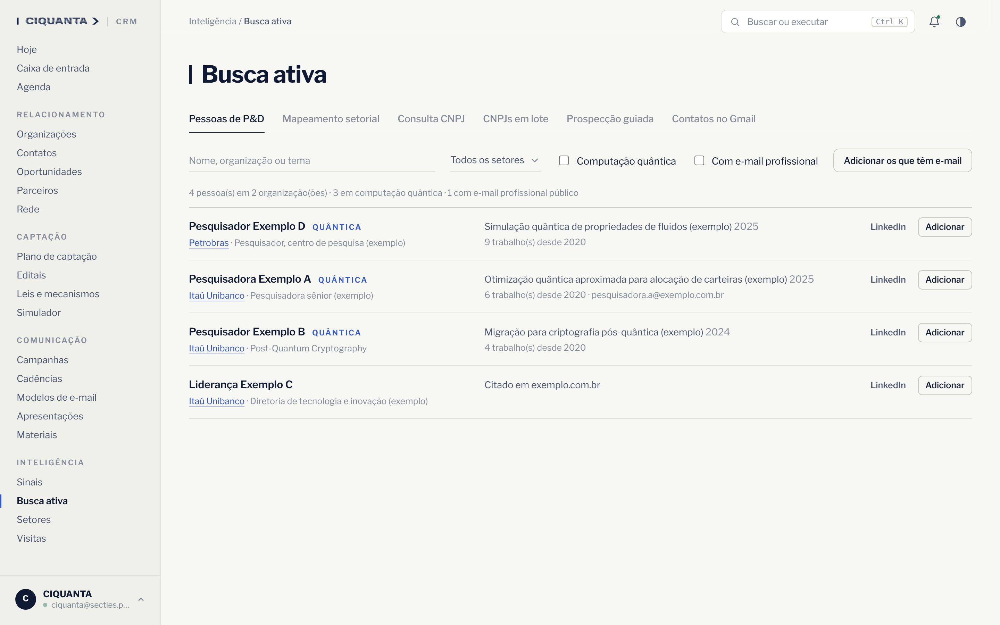
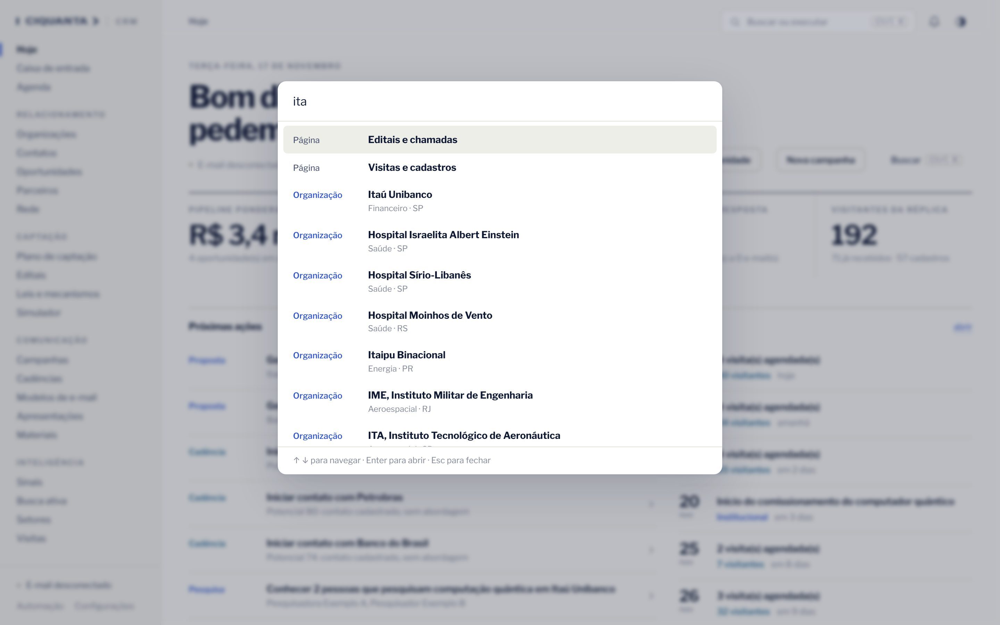
| Atalho | Ação |
|---|---|
| Ctrl K ou / | Busca rápida e ações (nova organização, nova oportunidade, relatório, cópia, tema) |
| ? | Lista de atalhos |
| g e depois h o c n p m a i e s l | Hoje, Organizações, Contatos, Oportunidades, Parceiros, Captação, Agenda, Caixa de entrada, Cadências, Sinais, Leis e mecanismos |
| Esc | Fechar janelas |
| Sintoma | Causa provável e solução |
|---|---|
| “Chave de acesso incorreta” | O código publicado não é o copiado deste computador. Copie o código de novo, publique uma nova versão e conecte. |
| “Resposta inesperada da ponte” | A implantação não está como “Qualquer pessoa” ou o endereço não termina em /exec. Revise o passo 02. |
| “Qualquer pessoa” não aparece no Apps Script | A administração do Google Workspace da SECTIES restringe apps da Web. Peça à TI que permita, para esta conta, apps da Web acessíveis a qualquer pessoa. |
| Aviso para ativar o serviço Gmail API | No Apps Script, Serviços (+) → Gmail API → Adicionar, e publique uma nova versão. |
| Reuniões sem link do Meet | Adicione o serviço Google Calendar API e publique uma nova versão. |
| Cadências não enviam | Nenhum computador conectado e aberto, envio automático desligado em Cadências ou fora do horário comercial. |
| Limite diário atingido | O Google limita envios por dia (1.500 destinatários no Workspace, por script). Os envios continuam no dia seguinte. |
| O código não chega | Confira a caixa e o spam de ciquanta@secties.pb.gov.br. Depois de seis pedidos seguidos, a ponte espera 15 minutos antes de enviar outro. |
| “Acesso encerrado ou expirado” | A sessão venceu (30 dias) ou foi encerrada em Configurações. Entre de novo com um código. |
| Dados diferentes entre computadores | Base compartilhada desligada em um deles. Ligue em Configurações e use “Sincronizar agora”. |
| A Central mostra coleta antiga | Veja a aba Actions do repositório no GitHub; o resultado de cada execução fica registrado lá. |
radarsecties/ciquanta-crm no GitHub, publicado pelo GitHub Pages (Settings → Pages → branch main). Cada mudança enviada à branch principal entra no ar em minutos..github/workflows/coleta.yml. Em Settings → Actions → General, a permissão de gravação precisa estar ligada.ANTHROPIC_API_KEY em Settings → Secrets and variables → Actions. Opcionalmente, a variável CIQUANTA_MODELO escolhe o modelo e CIQUANTA_LOTE_IA quantas organizações pesquisar por dia.OPENALEX_API_KEY amplia a cota na OpenAlex, e a variável CIQUANTA_LOTE_PESQUISA define quantas organizações pesquisar por execução (padrão 45). Para rodar só uma etapa, use Run workflow e informe, por exemplo, pesquisadores..claude/skills/design-ciquanta/SKILL.md; node tools/design/revisar.mjs captura todas as telas e aponta desvios.ponte/ponte.gs. Quando o repositório trouxer uma versão nova, copie e publique de novo no Apps Script.data/. Antes de publicar alterações manuais, rode node tools/validar-dados.mjs.CIQUANTA · Centro Internacional de Computação e Tecnologias Quânticas do Estado da Paraíba · Estação das Artes Luciano Agra, João Pessoa (PB) · ciquanta@secties.pb.gov.br